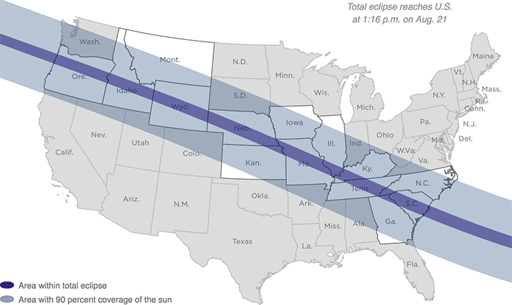

{% extends 'base_template.html' %}

{% block content %}

    <div id="graphic-wrapper">
        <span id="time-note">Total eclipse reaches U.S. at 1:16 p.m. on Aug. 21</span>
        <div id="map-canvas" class="graphic">
            
        </div>
        <div id="map-legend">
            <div class="legend-item umbra">
                <b class="legend-color"></b>
                <span class="legend-text">Area within total eclipse</span>
            </div>
            <div class="legend-item penum">
                <b class="legend-color"></b>
                <span class="legend-text">Area with 90 percent coverage of the sun</span>
            </div>
        </div>
        <div id="touch-note">Tap to explore map</div>
    </div>

    {% if COPY.labels.footnote %}
    <div class="footnotes">
        <h4>Notes</h4>
        <p>{{ COPY.labels.footnote|smarty }}</p>
    </div>
    {% endif %}

    <div class="footer">
        {% if COPY.labels.source %}<p>Source: {{ COPY.labels.source|smarty }}</p>{% endif %}
        {% if COPY.labels.credit %}<p>Credit: {{ COPY.labels.credit|smarty }}</p>{% endif %}
    </div>

    <script type="text/javascript">
        var STATES = {{ COPY.states.json() }};
        var CITIES = {{ COPY.cities.json() }};
    </script>

{% endblock content %}

{% block js %}

    {{ JS.push('js/lib/underscore.js') }}
    {{ JS.push('js/lib/d3.min.js') }}
    {{ JS.push('js/lib/d3.geo.projection.v0.min.js') }}
    {{ JS.push('js/lib/topojson.v1.min.js') }}
    {{ JS.push('js/lib/textures.min.js') }}
    {{ JS.push('js/lib/modernizr-custom.js') }}
    {{ JS.push('js/base.js') }}
    {{ JS.push('js/geomath.js') }}
    {{ JS.push('js/graphic.js') }}
    {{ JS.render('js/graphic-footer.js') }}

{% endblock js %}
